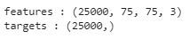
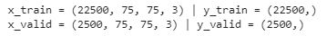
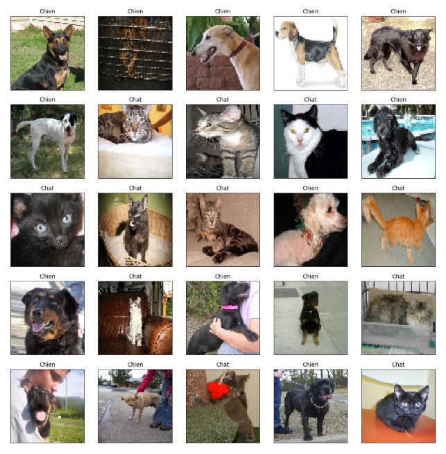
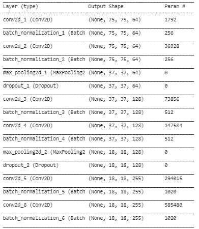
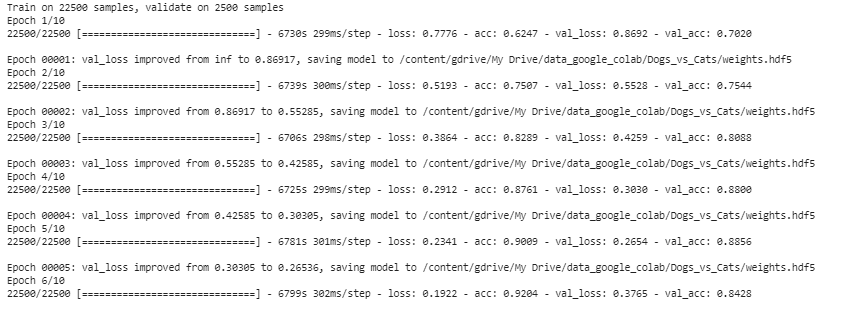
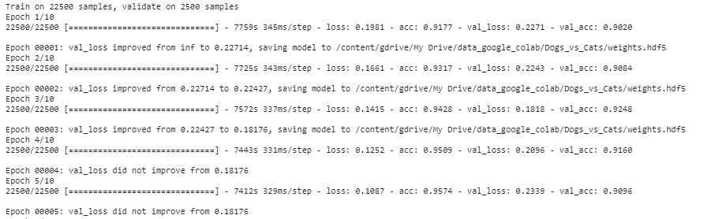
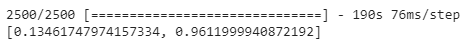
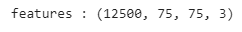
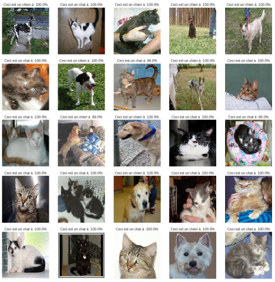
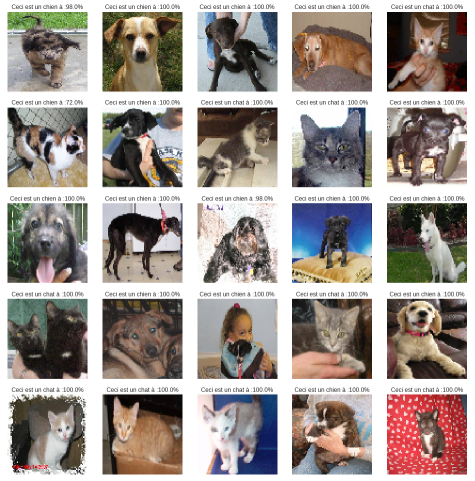

Classification d'image

Nous allons créer un réseau convolutif à partir du jeu d'images Dogs vs. Cats disponible sur kaggle. L'objectif est d'identifier si l'image comporte un chien ou un chat.
Importation des librairies
import numpy as np
import os
from PIL import Image
import matplotlib.pyplot as pltImportation des données
Dans un premier temps, nous allons établir la connection avec notre espace de stockage google drive. Cela nous permettera de télécharger le fichier zip puis de le déziper.
from google.colab import drive
drive.mount('/content/gdrive')
root_path = '/content/gdrive/My Drive/data_google_colab/Dogs_vs_Cats/'
# Déziper le jeu d'entrainement
!unzip '/content/gdrive/My Drive/data_google_colab/Dogs_vs_Cats/train.zip'
files = os.listdir("/content/train/")Nous importons l'ensemble des images et leur label dans un vecteur.
features = []
targets = []
for file in files:
features.append(np.array(Image.open("/content/train/" + file).resize((75, 75))))
target = 1 if "cat" in file else 0
targets.append(target)
features = np.array(features)
targets = np.array(targets)
print("features :", features.shape)
print("targets : ", targets.shape)
Echantillonnage
Echantillonnage des données avec un taux d'apprentissage de 10%
from sklearn.model_selection import train_test_split
x_train, x_valid, y_train, y_valid = train_test_split(features, targets, test_size=0.1, random_state=123)
print("x_train =",x_train.shape," | y_train =",y_train.shape)
print("x_valid =",x_valid.shape," | y_valid =",y_valid.shape)
index = np.arange(len(x_train))
np.random.shuffle(index)
x_train = x_train[index]
y_train = y_train[index]
fig = plt.figure(figsize=(17,17))
plt.gcf().subplots_adjust( wspace = 0, hspace = 0.2)
for i in range(1,26):
plt.subplot(5, 5, i)
img = plt.imshow(features[i])
img.axes.get_xaxis().set_visible(False)
img.axes.get_yaxis().set_visible(False)
if targets[i] == 0:
label = "Chien"
else:
label = "Chat"
plt.title((label))
plt.show()
Création du modèle
Pour créer notre modèle convolutif, nous nous sommes inspirés du modèle VGG16 en ajoutant de la Batch normalisation, Nous n'avons pas utilisé de modèle pré-entraîné dans cet exemple.
from keras.models import Sequential
from keras.layers import Conv2D, MaxPooling2D, Dropout, Flatten, Dense, Activation, BatchNormalization
from keras import optimizers
model = Sequential()
model.add(Conv2D(64, (3, 3),padding = 'same', activation='relu', input_shape=(75, 75, 3)))
model.add(BatchNormalization())
model.add(Conv2D(64, (3, 3),padding = 'same', activation='relu'))
model.add(BatchNormalization())
model.add(MaxPooling2D(pool_size=(2, 2)))
model.add(Dropout(0.25))
model.add(Conv2D(128, (3, 3),padding = 'same', activation='relu'))
model.add(BatchNormalization())
model.add(Conv2D(128, (3, 3),padding = 'same', activation='relu'))
model.add(BatchNormalization())
model.add(MaxPooling2D(pool_size=(2, 2)))
model.add(Dropout(0.25))
model.add(Conv2D(255, (3, 3),padding = 'same', activation='relu'))
model.add(BatchNormalization())
model.add(Conv2D(255, (3, 3),padding = 'same', activation='relu'))
model.add(BatchNormalization())
model.add(Conv2D(255, (3, 3),padding = 'same', activation='relu'))
model.add(BatchNormalization())
model.add(MaxPooling2D(pool_size=(2, 2)))
model.add(Dropout(0.25))
model.add(Conv2D(512, (3, 3),padding = 'same', activation='relu'))
model.add(BatchNormalization())
model.add(Conv2D(512, (3, 3),padding = 'same', activation='relu'))
model.add(BatchNormalization())
model.add(Conv2D(512, (3, 3),padding = 'same', activation='relu'))
model.add(BatchNormalization())
model.add(MaxPooling2D(pool_size=(2, 2)))
model.add(Dropout(0.25))
model.add(Flatten())
model.add(Dense(512, activation='relu'))
model.add(BatchNormalization())
model.add(Dropout(0.50))
model.add(Dense(1, activation='sigmoid'))
optimiser = optimizers.Adadelta(lr=1.0, rho=0.95, epsilon=None, decay=0.0)
model.compile(loss='binary_crossentropy', optimizer=optimiser, metrics=['accuracy'])
model.summary()

Entraînement du modèle
Nous avons mis en place une sauvegarde automatique des paramètres du modèle après chaques epoch.
from keras.callbacks import ModelCheckpoint
checkpointer = ModelCheckpoint(filepath='/Dogs_vs_Cats/weights.hdf5', verbose=1, save_best_only=True)Entraînement du modèle
model.fit(x_train,
y_train,
batch_size=100,
epochs=10,
validation_data=(x_valid, y_valid),
callbacks=[checkpointer])

Maintenant que notre modèle est entraîné, nous allons vérifier les performances sur l'échantillon de validation
model.load_weights('/content/gdrive/My Drive/data_google_colab/Dogs_vs_Cats/weights_2.hdf5')
model.evaluate(x=x_valid, y=y_valid, batch_size=200)
Nous obtenons donc sur l'échantillon de validation une accuracy de 96,12% et une loss de 0,1346
Echantillon de test
Nous allons maintennat appliquer le modèle sur l'échantillon de test. Nous allons d'abord importer les images de test de la même manière que pour les images d'entrainement.
!unzip '/content/gdrive/My Drive/data_google_colab/Dogs_vs_Cats/test.zip'
files = os.listdir("/content/test/")
features = []
for file in files:
features.append(np.array(Image.open("/content/train/" + file).resize((75, 75))))
features = np.array(features)
print("features :", features.shape)
Visualisation des résultats
index = np.arange(len(features))
np.random.shuffle(index)
features = features[index]
predict = model.predict(features[:25], batch_size=200)Nous allons appliquer le modèle sur un échantillon de 25 images issues de l'échantillon de test.
Visualisation des résultats
fig = plt.figure(figsize=(17,17))
plt.gcf().subplots_adjust( wspace = 0, hspace = 0.2)
for i in range(1,26):
plt.subplot(5, 5, i)
img = plt.imshow(features[i])
img.axes.get_xaxis().set_visible(False)
img.axes.get_yaxis().set_visible(False)
if predict[i]>=0.5:
label = "Ceci est un chat à :" + str(round(predict[i][0]*100)) + "%"
else:
label = "Ceci est un chien à :" + str(round((1-predict[i][0])*100)) + "%"
plt.title(label)
plt.show()
